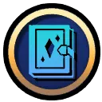
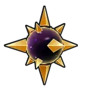
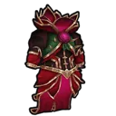
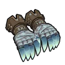
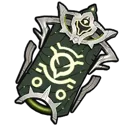

Astromante
Conjurador
Com magia da terra sob seu comando absoluto, alguns voltam o olhar para os céus além do céu.
Atributos
Ataque (100)
2.150
Defesa (100)
990
Vida (100)
500
Hypermax: o build mais forte
1º de 42 classes no ranking Hypermax
Poder no placar
1.783.535
Poder no perfil
1.426.828
Ataque
388.112
Defesa
19.042
Vida
2.707
Crítico
84%
Dano crítico
×6.5
Elemento
180

Catalisador de Abertura T16
Runa: Elemento Oblívio · Espírito: Espírito do Leviatã

Manto de Pétalas Letais T16
Runa: Elemento Turbilhão · Espírito: Espírito do Leviatã
Chapéu para Pensar T16
Runa: Elemento Turbilhão · Espírito: Espírito do Leviatã

Garras de Revenante T16
Runa: Elemento Turbilhão · Espírito: Espírito do Leviatã

Placa de Outro Mundo T16
Runa: Elemento Turbilhão · Espírito: Espírito do Leviatã
Escudo de Javataque T8
Runa: Elemento Turbilhão · Espírito: Espírito do Leviatã
Habilidades: Detentor das Linhas Telúricas T4, Limite do Apostador T4, Encantamento Quíntuplo T4, Tudo ou Nada T4, Arquimago Ascendido T4
Calculado só com os dados do jogo: qualidade Lendária, Forjado nas Estrelas, Ascensão e Transcendência, nível 50.